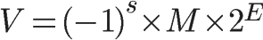
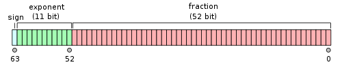

1.
前几天，我在读一本C语言教材，有一道例题：
#include <stdio.h>
void main(void){
int num=9; /* num是整型变量，设为9 */
float* pFloat=# /* pFloat表示num的内存地址，但是设为浮点数 */
printf("num的值为：%d\n",num); /* 显示num的整型值 */
printf("*pFloat的值为：%f\n",*pFloat); /* 显示num的浮点值 */
*pFloat=9.0; /* 将num的值改为浮点数 */
printf("num的值为：%d\n",num); /* 显示num的整型值 */
printf("*pFloat的值为：%f\n",*pFloat); /* 显示num的浮点值 */
}
运行结果如下：
num的值为：9
*pFloat的值为：0.000000
num的值为：1091567616
*pFloat的值为：9.000000
我很惊讶，num和*pFloat在内存中明明是同一个数，为什么浮点数和整数的解读结果会差别这么大？
要理解这个结果，一定要搞懂浮点数在计算机内部的表示方法。我读了一些资料，下面就是我的笔记。
2.
在讨论浮点数之前，先看一下整数在计算机内部是怎样表示的。
int num=9;
上面这条命令，声明了一个整数变量，类型为int，值为9（二进制写法为1001）。普通的32位计算机，用4个字节表示int变量，所以9就被保存为00000000 00000000 00000000 00001001，写成16进制就是0x00000009。
那么，我们的问题就简化成：为什么0x00000009还原成浮点数，就成了0.000000？
3.
根据国际标准IEEE 754，任意一个二进制浮点数V可以表示成下面的形式：

（1）(-1)^s表示符号位，当s=0，V为正数；当s=1，V为负数。
（2）M表示有效数字，大于等于1，小于2。
（3）2^E表示指数位。
举例来说，十进制的5.0，写成二进制是101.0，相当于1.01×2^2。那么，按照上面V的格式，可以得出s=0，M=1.01，E=2。
十进制的-5.0，写成二进制是-101.0，相当于-1.01×2^2。那么，s=1，M=1.01，E=2。
IEEE 754规定，对于32位的浮点数，最高的1位是符号位s，接着的8位是指数E，剩下的23位为有效数字M。

对于64位的浮点数，最高的1位是符号位S，接着的11位是指数E，剩下的52位为有效数字M。

5.
IEEE 754对有效数字M和指数E，还有一些特别规定。
前面说过，1≤M<2，也就是说，M可以写成1.xxxxxx的形式，其中xxxxxx表示小数部分。IEEE 754规定，在计算机内部保存M时，默认这个数的第一位总是1，因此可以被舍去，只保存后面的xxxxxx部分。比如保存1.01的时候，只保存01，等到读取的时候，再把第一位的1加上去。这样做的目的，是节省1位有效数字。以32位浮点数为例，留给M只有23位，将第一位的1舍去以后，等于可以保存24位有效数字。
至于指数E，情况就比较复杂。
首先，E为一个无符号整数（unsigned int）。这意味着，如果E为8位，它的取值范围为0~255；如果E为11位，它的取值范围为0~2047。但是，我们知道，科学计数法中的E是可以出现负数的，所以IEEE 754规定，E的真实值必须再减去一个中间数，对于8位的E，这个中间数是127；对于11位的E，这个中间数是1023。
比如，2^10的E是10，所以保存成32位浮点数时，必须保存成10+127=137，即10001001。
然后，指数E还可以再分成三种情况：
（1）E不全为0或不全为1。这时，浮点数就采用上面的规则表示，即指数E的计算值减去127（或1023），得到真实值，再将有效数字M前加上第一位的1。
（2）E全为0。这时，浮点数的指数E等于1-127（或者1-1023），有效数字M不再加上第一位的1，而是还原为0.xxxxxx的小数。这样做是为了表示±0，以及接近于0的很小的数字。
（3）E全为1。这时，如果有效数字M全为0，表示±无穷大（正负取决于符号位s）；如果有效数字M不全为0，表示这个数不是一个数（NaN）。
6.
好了，关于浮点数的表示规则，就说到这里。
下面，让我们回到一开始的问题：为什么0x00000009还原成浮点数，就成了0.000000？
首先，将0x00000009拆分，得到第一位符号位s=0，后面8位的指数E=00000000，最后23位的有效数字M=000 0000 0000 0000 0000 1001。
由于指数E全为0，所以符合上一节的第二种情况。因此，浮点数V就写成：
V=(-1)^0×0.00000000000000000001001×2^(-126)=1.001×2^(-146)
显然，V是一个很小的接近于0的正数，所以用十进制小数表示就是0.000000。
7.
再看例题的第二部分。
请问浮点数9.0，如何用二进制表示？还原成十进制又是多少？
首先，浮点数9.0等于二进制的1001.0，即1.001×2^3。
那么，第一位的符号位s=0，有效数字M等于001后面再加20个0，凑满23位，指数E等于3+127=130，即10000010。
所以，写成二进制形式，应该是s+E+M，即0 10000010 001 0000 0000 0000 0000 0000。这个32位的二进制数，还原成十进制，正是1091567616。
（完）


.gif)
半就业 说：
博主以前没有学过C语言？？
2010年6月 6日 15:05 | 档案 | 引用
许通 说：
研究得如此透彻。。。我是大二得学生，以前也学过C语言，但觉得学得不够好，现正在从头看《C Primer Plus》.博主看的是哪一本教材呢？
2010年6月 6日 15:30 | 档案 | 引用
ddd 说：
我觉得研究这个细节真没有什么用。
2010年6月 6日 16:36 | 档案 | 引用
许通 说：
不同意你的看法，我觉得研究这些细节有助于加深对C语言本质的理解。
2010年6月 6日 17:34 | 档案 | 引用
幻の上帝 说：
除了涉及到C语言关键字float以外，这个真的和语言本身毛关系都没有。什么叫“C语言的本质”？
用什么方法实现浮点数运算，输入输出的细节，都是语言实现和语言用户的事情。
2010年6月 6日 18:17 | 档案 | 引用
睦 说：
資料在檔案讀取，或運算後可能發生的錯誤都很難以除錯，經過博主的說明，更加清楚二者型別間轉換的差異，果然魔鬼就藏在細節裡，謝謝您的分享~ :)
2010年6月 6日 19:05 | 档案 | 引用
z 说：
非科班的啊~
2010年6月 6日 21:58 | 档案 | 引用
cc 说：
学到东西了，Thanks
2010年6月 6日 22:28 | 档案 | 引用
Ruan YiFeng 说：
我以前自学过，好多地方看不懂。现在正好重新温习一遍。
2010年6月 6日 22:42 | 档案 | 引用
Ruan YiFeng 说：
我现在看的是一本国产教材，随手从图书馆里拿的，就不说是哪一本了。
但是，我的这篇文章，很大部分出自《深入理解计算机系统》（Computer Systems: A Programmer Perspective）的第二章。
2010年6月 6日 22:46 | 档案 | 引用
凌风 说：
这些在大学计算机专业的教材上都有讲的，比如《计算机组成原理》。
不是很难，有兴趣的大家可以去看看。
博主是非科班的，不简单啊，毕竟是术业有专攻嘛。
无意中在网上看到了你写的《如何变得有思想？》，过来逛逛。
2010年6月 6日 23:39 | 档案 | 引用
roy_hu 说：
真要搞清楚，推荐What Every Computer Scientist Should Know About Floating-Point Arithmetic
2010年6月 6日 23:55 | 档案 | 引用
鳞 说：
这行:
float* pFloat=# /* pFloat表示num的内存地址，但是设为浮点数 */
--
GCC编译器编译不过去的.
error: cannot convert 'int*' to 'float*' in initialization|
2010年6月 7日 08:58 | 档案 | 引用
半就业 说：
2010年6月 7日 09:33 | 档案 | 引用
半就业 说：
这个可是相当有用。明白了这个你就知道为什么整型变量可以通过移位来进行乘除法了，当然，还有很多技巧与此有关。
2010年6月 7日 09:49 | 档案 | 引用
Ruan YiFeng 说：
我的GCC可以编译啊，但是会产生一个指针类型不匹配的警告。
2010年6月 7日 09:58 | 档案 | 引用
匿名懦夫 说：
没用？？
这东西要是没用你手机上就不会有那么多软件可以用。
手机CPU没有浮点处理器，一切浮点运算皆是使用定点数实现。
将开发的算法移植到手机平台的过程中，会大量运用到本博文中提到的概念。
更进一步，大量电子产品中都没有浮点处理器，包括貌似很高级的导弹也是如此。
第一次海湾战争中，含冤死在飞毛腿导弹下的16名驻沙特美国大兵，会严重不同意你这个说法，正是因为爱国者导弹控制系统中定点数算法的累积误差，他们才会被没有被拦截到的飞毛腿导弹击中。
2010年6月 7日 21:03 | 档案 | 引用
kain 说：
float* pFloat=#
这句一般是编译通不过的, 会报错, 我用VC试过了, 需要强制转换. 教材倒是都学过, 但是还真没注意到, 毕竟一般强制转换的都是类地址什么的, 基本数据类型间的转换倒是很少做.
2010年6月 7日 21:51 | 档案 | 引用
Drosophila 说：
握爪～～我也在从头学C语言，而且也是看的这本书。挺好玩的。
楼上很多人说有没有用，我这非科班的业余人士不好做这种判断，不过我觉得，搞懂一个问题本身就是有趣且有意义的事清。
2010年6月 7日 23:59 | 档案 | 引用
KingsamChen 说：
float* pFloat=# /* pFloat表示num的内存地址，但是设为浮点数 */
这句如果不用强制类型转换，编译器应该不让过吧~
2010年6月 8日 17:44 | 档案 | 引用
LK 说：
很想知道浮点和定点的累积误差是怎么回事。。。
似乎浮点的误差是不可避免但可控，细节不清楚
请教
2010年6月13日 00:30 | 档案 | 引用
Ruan YiFeng 说：
这是因为很多小数不能准确表示成二进制形式。比如0.4，你就无法写出它的精确二进制形式（即0.5的各次幂的累加），我们只能不断接近0.4，而不能达到它。
2010年6月13日 07:36 | 档案 | 引用
墨叶 说：
事实上VC和BC内部存储也是不一样的，用过的应该有印象
2010年6月15日 15:18 | 档案 | 引用
loveclan 说：
IEEE浮点数应该是不享受结合律和交换律的，所以使用时要特别小心。而且CPU浮点数寄存器精度和标准浮点数不一样，详见 http://book.douban.com/subject/1229948/《Computer Systems--A Programmer's Perspective》的第二章。
2010年6月26日 23:44 | 档案 | 引用
嘟嘟 说：
等你做通信就知道多有用了，需要自己解析算的。
2010年7月22日 17:06 | 档案 | 引用
pl 说：
说道浮点结构, 不得不提这个函数啊!!
float InvSqrt (float x)
{
float xhalf = 0.5f*x;
int i = *(int*)&x;
i = 0x5f3759df - (i>>1);
x = *(float*)&i;
x = x*(1.5f - xhalf*x*x);
return x;
}
传奇性的函数啊.
2010年8月28日 16:47 | 档案 | 引用
matthew 说：
博文中的公式
V=(-1)^0×0.00000000000000000001001×2^(-126)=1.001×2^(-146)
里面的-146应该是-126吧（以为指数是1-127）
2010年9月16日 14:07 | 档案 | 引用
mafai 说：
E的真实值必须再减去一个中间数，对于8位的E，这个中间数是127
比如，2^10的E是10，所以保存成32位浮点数时，必须保存成10+127=137，即10001001。
那么，第一位的符号位s=0，有效数字M等于001后面再加20个0，凑满23位，指数E等于3+127=130，即10000010。
上面是否应该是真实值加上一个中间数呢？因为下面两个例子均是使用 + 127
2010年9月20日 11:23 | 档案 | 引用
timyuanzhiwei 说：
这个真的很有用！ 废话不说，谢谢分享。。。。
2011年4月29日 22:41 | 档案 | 引用
kevin 说：
（3）E全为1。这时，如果有效数字M全为0，表示±无穷大（正负取决于符号位s）；如果有效数字M不全为0，表示这个数不是一个数（NaN）。
请教，为什么这个case里面M要区别全为0和非全为0的情况？
2011年12月29日 21:50 | 档案 | 引用
Robin 说：
不错。正好在看32位浮点数表示方法。原来有效位的第一位会省略的，主要是我看的计算机组成没讲清楚。现在豁然开朗。
2012年6月14日 09:16 | 档案 | 引用
atupal 说：
可以转载嘛？ 注明原文链接的
2012年8月22日 11:25 | 档案 | 引用
OceanCloud 说：
然后，指数E还可以再分成三种情况：
（1）...
（2）...
（3）...
第2种情况中E是不是等于0-127（或者0-1023）？
2012年9月27日 00:10 | 档案 | 引用
xudifsd 说：
博主关于第二部分中E=3+127解释得不多，详细见这篇文章的“规格化”部分
2012年10月29日 15:10 | 档案 | 引用
river 说：
多谢博主的解答。发现你的博文配图很好，不知道你是用什么工具做的呢
2012年11月 1日 15:35 | 档案 | 引用
robin 说：
不，应该就是-146，因为0.00000000000000000001001×2^(-126) = 0.00000000000000000001×1.001×2^(-126) = 1×2^(-20)×1.001×2^(-126) = 1.001×2^((-20)+(-126)) = 1.001×2^(-146)
2013年3月 2日 11:49 | 档案 | 引用
hoot 说：
很受用
2013年5月 1日 20:15 | 档案 | 引用
matrix3d 说：
斯坦福大学的编程范式公开课里就讲到了博主说说的这些
2013年5月 3日 09:34 | 档案 | 引用
想听什么baby 说：
受用，谢谢。这些才是最本质的。
2013年5月16日 20:38 | 档案 | 引用
小旺 说：
V=(-1)^0×0.00000000000000000001001×2^(-126)=1.001×2^(-146)
应该修改为：
V=(-1)^0×1.00000000000000000001001×2^(-126)
因为 M=000 0000 0000 0000 0000 1001（23b），转化为系数时，1自动加上，变成 1.000 0000 0000 0000 0000 1001(24b)
2013年9月 6日 23:35 | 档案 | 引用
kaicui 说：
为什么指数要使用无符号整型来表示，然后在计算的时候再减去一个中间数？
为什么不直接使用有符号整数表示？
2013年11月 8日 12:07 | 档案 | 引用
shmilyxbq 说：
做基础软件研发这些知识是绕不过去的，国内现在做的还少
2013年12月20日 17:14 | 档案 | 引用
yiltoncent 说：
2014年1月25日 16:26 | 档案 | 引用
yiltoncent 说：
错了 E为0，所以M不需要自动加一
2014年1月25日 16:27 | 档案 | 引用
zeekvfu 说：
我是来吐槽博客页面排版的。:-)
关于代码的展示，个人觉得用 pre 标签比 blockquote 标签更合适。另外，对于每行代码都用 p 和 strong 标签，实现方式实在是有些 ugly。
另外没有代码高亮展示，不知道你中文博客用的什么框架（英文是 WordPress），可以找相关的代码高亮插件。
2014年4月14日 21:57 | 档案 | 引用